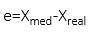
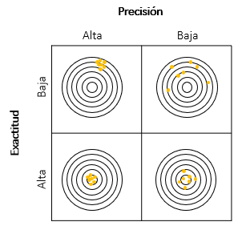

Conceptos previos
Error de medida
El error de medida es la diferencia entre un valor medido de una magnitud y un valor de referencia (valor convencional o valor verdadero).

Precisión
La precisión de medida es la proximidad existente entre los valores medidos obtenidos en mediciones repetidas de un mismo objeto, o de objetos similares, bajo condiciones específicas.
Exactitud
La exactitud representa la capacidad del método de medida de proporcionar datos con poco error. Debiera ser un dato unido al de la medida, de tal modo que el usuario de esta valore si cumple con sus expectativas.
La precisión y la exactitud son confundidas, pero son términos distintos: Un método puede ser muy preciso, pero poco exacto (por ejemplo, por estar afectado de un error sistemático). La situación ideal sería la de una medida con alta precisión y exactitud elevada (Figura 1).
Una importante distinción entre exactitud y precisión es que la exactitud puede determinarse con una sola medida, mientras que para evaluar la precisión se necesitan varias medidas (repetitividad), no pudiéndose hablar de precisión para una sola medida.
Figura 1. Diferencia entre precisión y exactitud
Un método puede ser muy preciso, pero poco exacto (por ejemplo, por estar afectado de un error sistemático).
La situación ideal sería la de una medida con alta precisión y exactitud elevada
Un método puede ser muy preciso, pero poco exacto (por ejemplo, por estar afectado de un error sistemático).
La situación ideal sería la de una medida con alta precisión y exactitud elevada